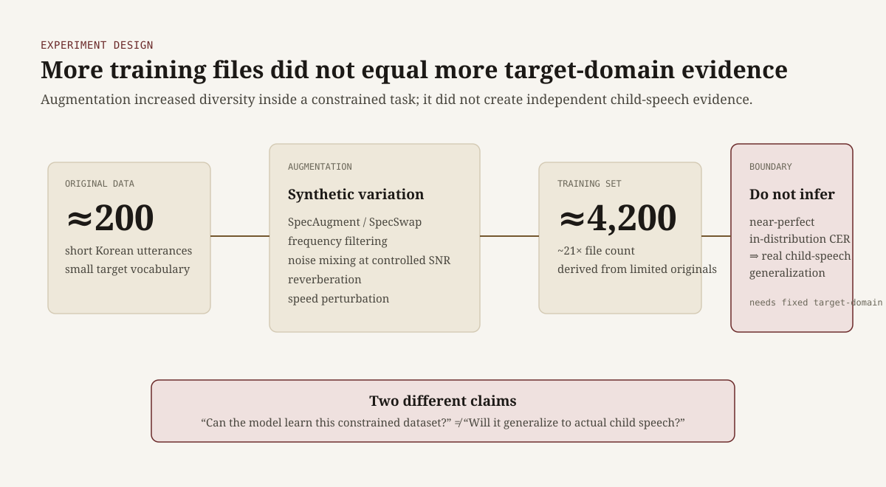
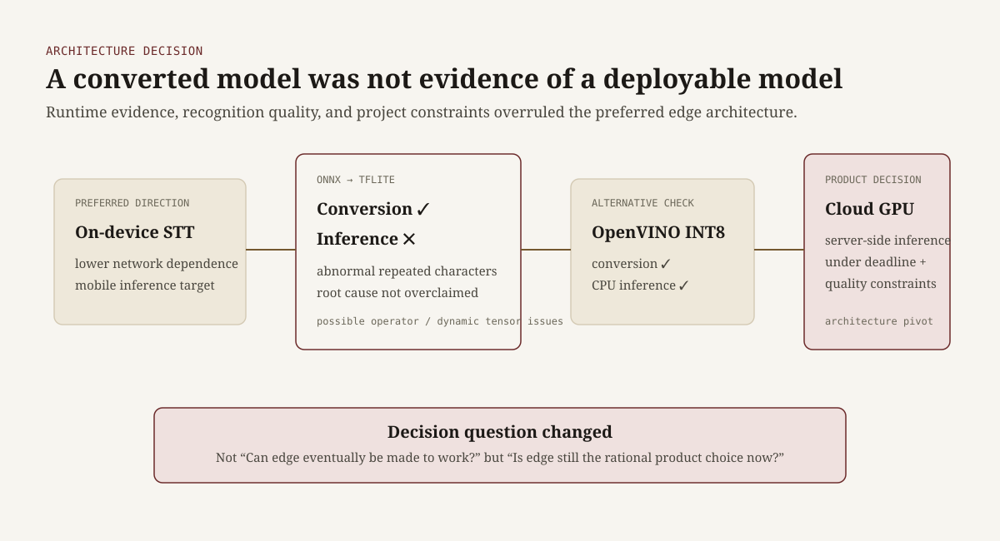
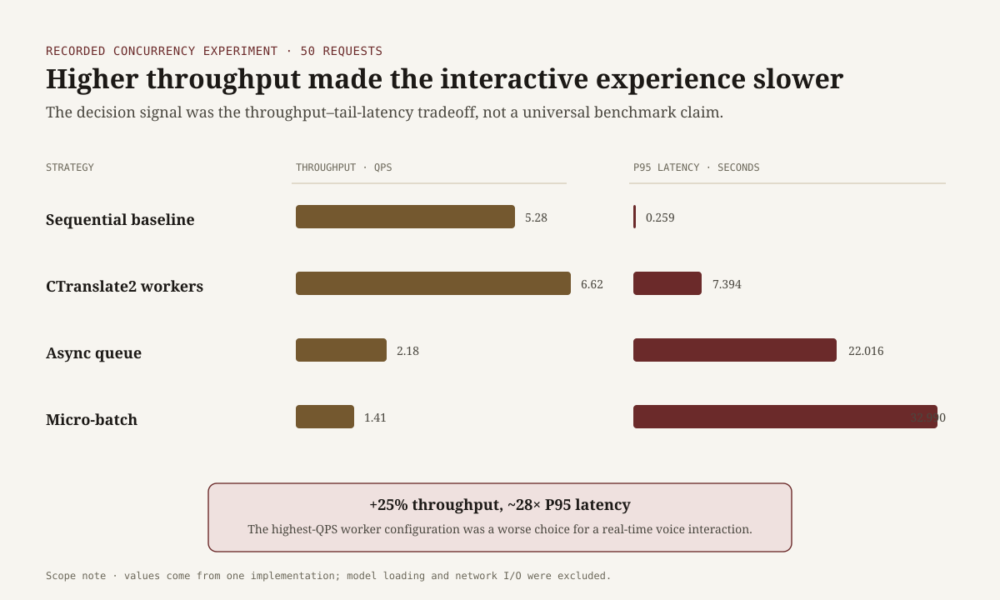

LetsPlay Infant Speech ASR — Letting Experimental Evidence Change the Architecture
A university–industry capstone on real-time voice interaction for young children. My AI work focused on recognizing short Korean child utterances from scarce, distribution-shifted data — and deciding what the evidence justified in a deployable system.
The task was not just to fine-tune a model. I needed to separate training-set progress from target-domain evidence, test deployment paths, and measure the system in ways that supported product decisions.
1. Augmentation was not evidence of generalization
The project began with roughly 200 recorded utterances. I expanded the dataset to about 4,200 files using spectrogram augmentation, frequency filtering, controlled-SNR noise mixing, reverberation, and speed perturbation.
Whisper-tiny eventually produced extremely strong in-distribution character-error results on the constrained keyword task. But most added samples were transformations of a limited source distribution, so that metric answered a narrower question than performance on real child speech.

“Can the model learn this constrained dataset?” and “Does the evidence support the product claim on real child speech?” are different questions.
2. Conversion success was not deployment success
The original architecture favored on-device inference. ONNX→TFLite conversion completed, but runtime inference emitted invalid repeated-character output. OpenVINO INT8 conversion and CPU inference succeeded, showing that another edge path was technically viable.

I did not claim a confirmed root cause for the TFLite failure; operator support and dynamic-tensor handling remained hypotheses. The product decision was clearer: further edge work was not the best use of the remaining schedule, so I moved inference to a server-side GPU.
3. Benchmark claims had to match the measurement method
I later compared PyTorch, ONNX Runtime, dynamic INT8 quantization,
torch.compile, and Faster-Whisper / CTranslate2 under production-oriented
experiments.
In one recorded Colab CPU setup, dynamic INT8 was slower than direct FP32. I kept that conclusion local to the measured implementation rather than turning it into a general claim about Whisper quantization.
A more important error came from memory measurement. An early Faster-Whisper result
appeared dramatically smaller than PyTorch because it used
torch.cuda.memory_allocated(). CTranslate2 allocates CUDA memory outside
PyTorch's allocator, so the comparison was invalid.
I removed the resulting “98% memory reduction” claim and marked it for re-testing
with process-level instrumentation such as NVML or nvidia-smi. I applied
the same discipline to latency: measurements with different warm-up, decoding, or
timing scopes were not presented as one controlled benchmark.
4. Throughput was not responsiveness
In one CTranslate2 service experiment, increasing worker concurrency raised throughput from about 5.28 to 6.62 requests per second, while P95 latency rose from 0.259s to 7.394s.

Maximizing the easiest server metric would have made the user-facing interaction worse.
What I would evaluate differently now
- Target-domain evaluation first: reserve a fixed child-speech test set before large-scale augmentation.
- Matched comparisons: standardize decoding, samples, warm-up, repetition count, and metric calculation across runtimes and models.
- Deployment constraints earlier: benchmark actual mobile/server constraints before investing deeply in conversion.
- Latency budget: define an interaction-level SLO and optimize concurrency against it instead of maximizing QPS in isolation.
Outcome
The project produced a sequence of evidence-based decisions: distinguish synthetic diversity from target-domain evidence, distinguish conversion from working inference, abandon an edge path when it no longer fits the product, and reject benchmark claims the measurement method cannot support.
That distinction — between a working experiment and defensible evidence — is now central to how I evaluate AI prototypes.
Stack: Python, PyTorch, Hugging Face Transformers, Whisper, ONNX, OpenVINO, CTranslate2 / Faster-Whisper, FastAPI
Research repository:
Jaeho-Jung/LetsPlay-ai-research
Service backend:
Jaeho-Jung/LetsPlay-server